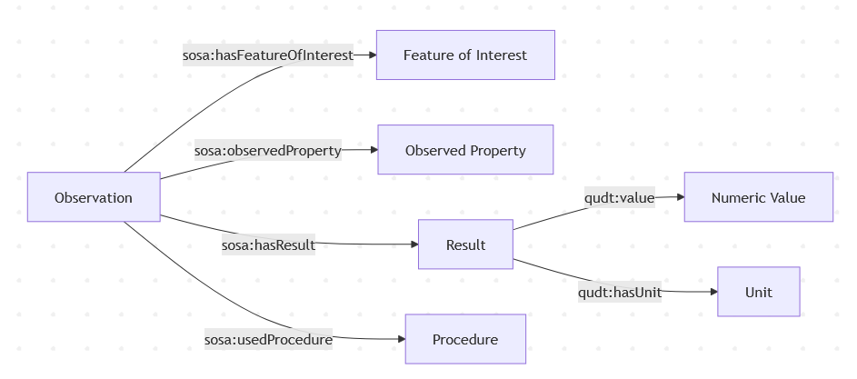
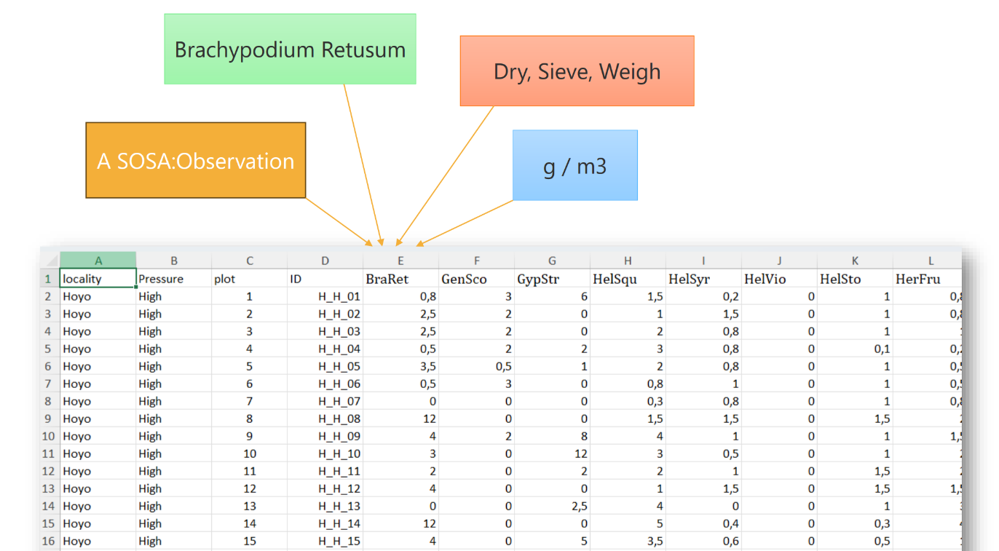

How to best annotate csv data for interoperability
Wageningen Model and Data Day
Paul van Genuchten
2026-10-15
Contents
- Mission Soil & SOILWISE
- Interoperable soil data sharing
- Bit of History
- Where we got stuck
- How we (likely) proceed
- Suggestions from the audience
Mission Soil
- Protect and restore soil health across Europe by 2030 (2021–2027)
- Connects research, innovation and practice to accelerate the transition towards healthy soils
- Budget: €542 million in Horizon Europe funding committed to 75 Mission Soil projects
SoilWise
- Strengthen the Mission Soil knowledge base by making soil research, data and solutions easier to find, access, combine and reuse
- Budget and duration: €6 million EU contribution under Horizon Europe; runs from September 2023 to August 2027.
- Wageningen University, WENR and ISRIC are 3 out of 14 partners (coordination at ILVO Flanders)
Interoperable soil data sharing
- Institutes and memberstates have tailored practices, goals and legislation to collect and store soil observation data
- Bringing the data together to have a pan-european view on soil health is a challenge
- FAIR principles have increased findability considerably, let’s move to interoperability
Bit of History
Farmers using mechanical planter (tobacco). Chatham County, North Carolina. The New York Public Library Digital Collections. 1940.
Global Soil Map and SOTER
Various efforts in the community to set up a standardised data model for soil data:
These initiatives are still relevant today
INSPIRE regulation and ISO standards
- The ISO28258 standard and INSPIRE community developed their standard for soil data synchronously around 2010.
- Both standards are based on the OGC Observations & Measurements standard
- SSN/SOSA is a semantic implementation of OMS
SOSA

SOSA structure
FAIR practices
- Use of repositories and registration of DOI’s
- RO-Crate describes date files within a repository deposit, in combination with schema.org and/or frictionless datapackage
- Investigation, Study, Assay (ISA) describes the context of an experiment
- i-Adopt unpacks (soil) properties, into its components
Observation standards in other communities
Our ambitions
- A metadata approach oriented around tabular data
- Easy and flexible
- Using, or based on existing standards
The data dictionary
- Data dictionaries that describe a dataset are quite common
- Not many initiatives exist to standardise these data dictionaries
Samples
A sample

Annotated tabular data
Our approach
Test various approaches on 10 tabular sample datasets, going from CSV to RDF and back from RDF to Tabular:
- CSV on the Web
- R2RML
- ISA-tab
- INSPIRE GeoPackage / Hale Studio
Where we got stuck
- CSV-W is a good fit for literature reviews and vocabularies
- RML is powerfull for software developers
- ISA-tab & INSPIRE GeoPackage interesting for certain use cases
How we (likely) proceed
- Define a new microformat for Observation Data; OMS-tab
- Webbased tool to create OMS-tab from CSV
- Software package to transform OMS-tab to RML
- API to transform csv+rml to RDF
- RDF to CSV utility for SSN-SOSA
Suggestions from the audience
…

Soilwise HE - EU Horizon Grant 101112838